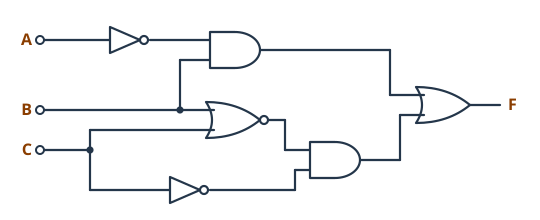
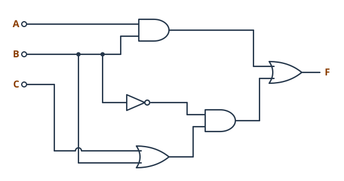
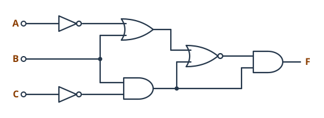
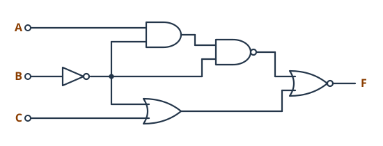
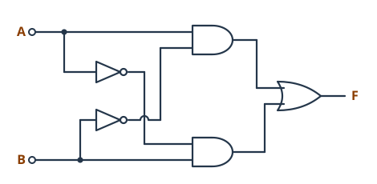
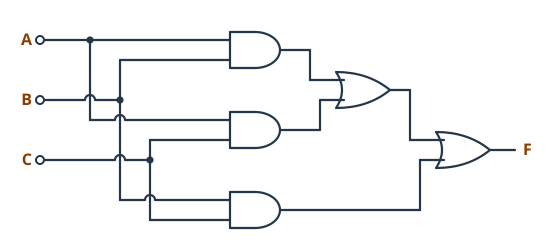

0221 · Montaje y mantenimiento de equipo · Tema 2 (UT2) · Ejercicios
Boletín 2 · Circuitos lógicos
Boletín 2 · Circuitos lógicos
Para cada circuito: (a) escribe la expresión de la salida de cada puerta, (b) obtén la expresión de F y (c) haz la tabla de verdad completa, con columnas intermedias. Sigue el método del ejemplo resuelto de la teoría. Recuerda: un punto une cables; un cruce con salto, no.
Si algún resultado te parece extraño, no lo cambies sin más: repasa el circuito puerta a puerta. Puede que sea correcto.
2.1 Circuito lógico 1


2.2 Circuito lógico 2


2.3 Circuito lógico 3


2.4 Circuito lógico 4


2.5 Circuito lógico 5


Solo tiene dos entradas, así que la tabla tiene 4 filas. Compara el resultado con las puertas del laboratorio: ¿a cuál equivale este circuito?
2.6 Circuito lógico 6


Tres jueces pulsan un botón (1 = sí) y F enciende una luz. Explica con tus palabras cuándo se enciende.
2.7 Dibuja el circuito con puertas lógicas de la función F = A · B + C' y haz su tabla de verdad. Puedes dibujarlo a mano o en un simulador como Logisim o Tinkercad, que ya conoces del tema 1.